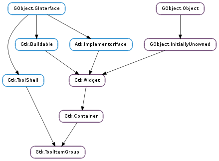

| static | new(label) |
| get_collapsed() | |
| get_drop_item(x, y) | |
| get_ellipsize() | |
| get_header_relief() | |
| get_item_position(item) | |
| get_label() | |
| get_label_widget() | |
| get_n_items() | |
| get_nth_item(index) | |
| insert(item, position) | |
| set_collapsed(collapsed) | |
| set_ellipsize(ellipsize) | |
| set_header_relief(style) | |
| set_item_position(item, position) | |
| set_label(label) | |
| set_label_widget(label_widget) |
| Name | Type | Flags | Description |
|---|---|---|---|
| collapsed | bool | r/w | Whether the group has been collapsed and items are hidden |
| ellipsize | Pango.EllipsizeMode | r/w | Ellipsize for item group headers |
| header-relief | Gtk.ReliefStyle | r/w | Relief of the group header button |
| label | str | r/w | The human-readable title of this item group |
| label-widget | Gtk.Widget | r/w | A widget to display in place of the usual label |
None
| Name | Type | Access |
|---|---|---|
| parent_instance | Gtk.Container | r |
Bases: Gtk.Container, Gtk.ToolShell
A Gtk.ToolItemGroup is used together with Gtk.ToolPalette to add Gtk.ToolItem s to a palette like container with different categories and drag and drop support.
| Parameters: | label (str) – the label of the new group |
|---|---|
| Returns: | a new Gtk.ToolItemGroup. |
| Return type: | Gtk.Widget |
Creates a new tool item group with label label.
| Returns: | True if group is collapsed, False if it is expanded |
|---|---|
| Return type: | bool |
Gets whether group is collapsed or expanded.
| Parameters: | |
|---|---|
| Returns: | the Gtk.ToolItem at position (x, y) |
| Return type: |
Gets the tool item at position (x, y).
| Returns: | the Pango.EllipsizeMode of group |
|---|---|
| Return type: | Pango.EllipsizeMode |
Gets the ellipsization mode of group.
| Returns: | the Gtk.ReliefStyle |
|---|---|
| Return type: | Gtk.ReliefStyle |
Gets the relief mode of the header button of group.
| Parameters: | item (Gtk.ToolItem) – a Gtk.ToolItem |
|---|---|
| Returns: | the index of item in group or -1 if item is no child of group |
| Return type: | int |
Gets the position of item in group as index.
| Returns: | the label of group. The label is an internal string of group and must not be modified. Note that None is returned if a custom label has been set with Gtk.ToolItemGroup.set_label_widget () |
|---|---|
| Return type: | str |
Gets the label of group.
| Returns: | the label widget of group |
|---|---|
| Return type: | Gtk.Widget |
Gets the label widget of group. See Gtk.ToolItemGroup.set_label_widget ().
| Returns: | the number of tool items in group |
|---|---|
| Return type: | int |
Gets the number of tool items in group.
| Parameters: | index (int) – the index |
|---|---|
| Returns: | the Gtk.ToolItem at index |
| Return type: | Gtk.ToolItem |
Gets the tool item at index in group.
| Parameters: |
|
|---|
Inserts item at position in the list of children of group.
| Parameters: | collapsed (bool) – whether the group should be collapsed or expanded |
|---|
Sets whether the group should be collapsed or expanded.
| Parameters: | ellipsize (Pango.EllipsizeMode) – the Pango.EllipsizeMode labels in group should use |
|---|
Sets the ellipsization mode which should be used by labels in group.
| Parameters: | style (Gtk.ReliefStyle) – the Gtk.ReliefStyle |
|---|
Set the button relief of the group header. See Gtk.Button.set_relief () for details.
| Parameters: |
|
|---|
Sets the position of item in the list of children of group.
| Parameters: | label (str) – the new human-readable label of of the group |
|---|
Sets the label of the tool item group. The label is displayed in the header of the group.
| Parameters: | label_widget (Gtk.Widget) – the widget to be displayed in place of the usual label |
|---|
Sets the label of the tool item group. The label widget is displayed in the header of the group, in place of the usual label.